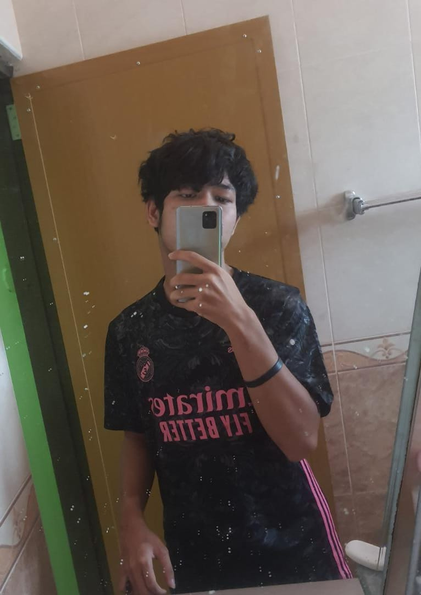

| Home | About Me | Experience | The Quotes | Contact Me |

I feel thankful and grateful for you by reading what I am sharing. I am also sorry for taking your precious time.
Assalamualaikum dan selamat sejahtera semua. Saya aiman, berumur 21 tahun. Hobi saya bermain f bola sepak, saya amat meminati kedua2 permainan ini kerana posisi saya sebagai striker yang menjadi kesukaan saya. Saya berasal dari Kelantan dan kini menetap di Bukit Mertajam,Pulau Pinang. Saya anak yang kedua daripada 4 orang adik-beradik. Saya merupakan seorang pelajar Diploma semester 5 dalam jurusan Fakulti Pengurusan Maklumat di UITM Merbok. Di semester 5 iaitu semester akhir ini saya mengambil 6 Subjek iaitu IMD 311, IMD 312, IMD 313, IMD 314, IMD 315 dan ENT 300. Harapan saya untuk semester akhir ini semestinya ingin memperolehi CGPA atas 3.5 bagi memudahkan saya untuk menyambung pelajaran saya di peringkat Degree di kemudian hari. Dalam keadaan ekonomi yang turun naik ini membuat saya semangat untuk belajar dan mengajar saya untuk terus bijak mengurus jadual waktu saya. Kebiasaannya kelas saya bermula pada waktu pagi, jadi ini mengajar saya supaya tidur awal pada waktu malam supaya tidak berasa kepenatan pada waktu kelas keesokannya. Selain itu, cara saya untuk mengisi waktu untuk membuat homework atau assignment ialah, saya akan membuatnya pada waktu malam bermula pada 8.30 sehingga 11 malam, dan saya juga akan membuatnya jika terdapat kelas yang dibatalkan atau waktu cuti Sabtu dan Ahad. Pada waktu lapang juga saya banyak mengulang kaji pelajaran dan bersukan di wakyu petang . Selain itu, saya akan mencari masa untuk meluangkan masa bersama keluarga saya seperti menonton televisyen,berborak, dan makan bersama ahli keluarga yang lain. Dan jika ada peluang, kami akan mengatur masa untuk makan di luar bersama-sama. Selain hanya membuat kerja, saya juga akan mengatur masa saya untuk bermain bola sepak bersama rakan saya pada waktu petang dan bermain futsal pada waktu malam ketika cuti.
Saya bersekolah di Sekolah Rendah Kebangsaan Bukit Minyak bermula dari darjah satu sehingga darjah enam. Seterusnya, saya juga bersekolah di Sekolah Menengah Kebangsaan Tinggi Bukit Mertajam. Semasa di Sekolah Menengah, saya memegang jawatan sebagai Ketua Pengawas Pembimbing Rakan Sebaya dan juga pernah mencapai beberapa pencapaian lain seperti Johan Rugby peringkat Daerah, serta mendapat pencapaian sebagai Pelajar Berdisiplin. Namun semua pencapaian ini, tidak akan berhasil jika tiada bantuan daripada barisan guru-guru yang sentiasa memberi tunjuk ajar, memberi teguran, bagi meningkatkan kebolehan saya. Jadi, saya amat-amat berterima kasih yang tidak terhingga kepada mereka.